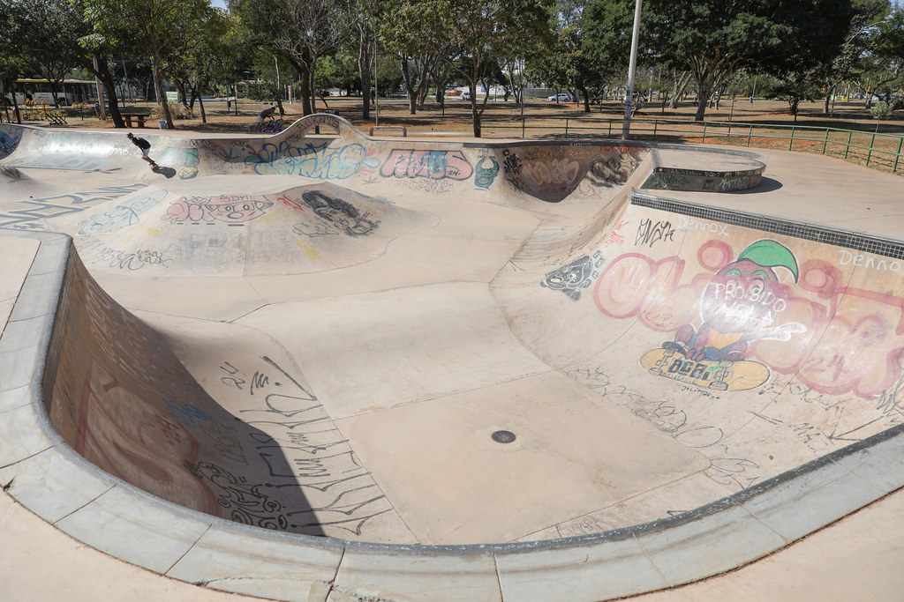
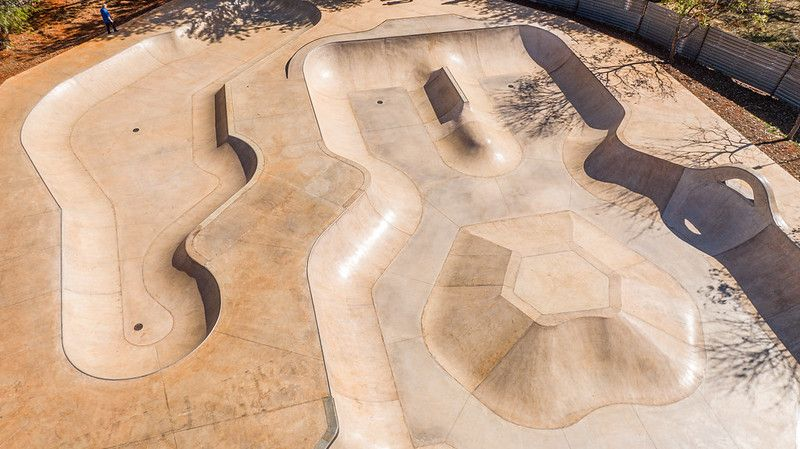

O que é a Pista de Skate da Sukata?

A Sukata – skatepark da Octogonal, inaugurada pela primeira vez na década de 90 antes mesmo do shopping ao lado ficar pronto, possui uma grande história de resistência dentro do cenário do skate do Plano Piloto. Organicamente ocupada pela juventude local, recebeu o apelido de “sukata”, que faz conexão à estética underground e ao estado deteriorado que a pista antiga possuía ao longo dos anos, marcada por buracos e rachaduras.


Considerada um dos polos tradicionais do skate no Distrito Federal (muitas vezes apontada como um dos primeiros picos com boa estrutura da região), a pista sempre funcionou como um ponto de encontro intergeracional, de socialização e resistência da cultura urbana no Plano Piloto, já tendo realizado diversas atividades coletivas para manter o local adequado à prática do esporte.
A pista teve sua reconstrução realizada no ano de 2023, transformando-se na primeira e única pista de skate com padrão profissional da modalidade bowl/park do DF até o momento da realização da publicação e execução deste projeto.

Com essa modernização e a escassez de outras pistas da mesma modalidade, a frequência do espaço aumentou, atraindo atletas de todos os níveis, famílias, crianças e moradores do Sudoeste, da Octogonal e de todo o DF. No entanto, a alta circulação de pessoas trouxe um novo desafio: como equilibrar a vivacidade de um polo esportivo de referência distrital, a convivência de diversos grupos e a segurança de todos os frequentadores?
É tentando abordar esta problemática que inicio minha pesquisa com a comunidade de skate local deste espaço, a fim de criar um Guia de Convivência da Sukata Skatepark como minha proposta extensionista voltada para a cidadania urbana. O objetivo é disponibilizar um canal digital de fácil acesso com orientações valiosas para novos visitantes e praticantes de outras modalidades. A iniciativa busca evitar acidentes ou condutas perigosas, tendo em vista a alta concentração mental exigida pela prática nas rampas e obstáculos da pista.